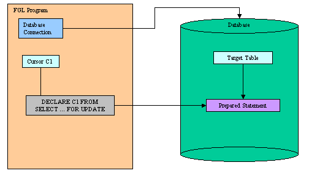
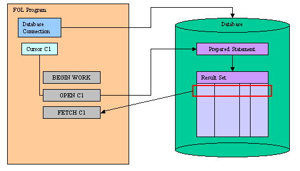
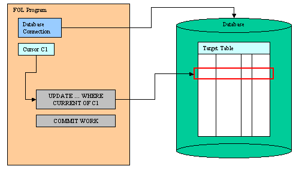

Back to Contents
Summary:
See also: Transactions, Static SQL, Dynamic
SQL, Result Sets, SQL
Errors.
When declaring a database cursor with a
SELECT statement using a unique table and including the FOR UPDATE
keywords, you can update or delete database rows by using the WHERE CURRENT OF
keywords in the UPDATE or DELETE statements.
Such an operation is called Positioned Update or Positioned Delete.
Some database servers do not support hold cursors (WITH HOLD)
declared with a SELECT statement including the
FOR UPDATE
keywords. The SQL standards require 'for update' cursors to be automatically
closed at the end of a transaction. Therefore, it is strongly recommended
that you use positioned updates in a transaction block.
Do not confuse positioned update with the use
of SELECT FOR UPDATE
statements that are not associated with a database
cursor. Executing SELECT FOR UPDATE statements is supported by the
language, but you cannot perform positioned updates since there is
no cursor
identifier associated to the result set.
To perform a positioned update or delete, you must declare
the database cursor with a SELECT FOR UPDATE statement:

Then, start a transaction, open
the cursor and fetch a row:

Finally, you update or delete
the current row and you commit
the transaction:

Purpose:
Use this instruction to associate a database cursor with a SELECT statement
to perform positioned updates in the current connection.
Syntax:
DECLARE cid [SCROLL] CURSOR [WITH
HOLD] FOR { select-statement
| sid }
Notes:
- cid is the identifier of the database cursor.
- select-statement is a SELECT statement defined in Static
SQL.
- To perform positioned updates, the select-statement
must include the FOR UPDATE keywords.
- sid is the identifier of a prepared
SELECT statement including the FOR UPDATE keywords.
- See the DECLARE instruction description in Result
Sets Processing.
- DECLARE must precede any other statement that refers to the
cursor during program execution.
Warnings:
- The scope of reference of the cid cursor identifier is local to
the module where it is declared. Therefore, you
must execute the DECLARE, UPDATE or DELETE
instructions in the same module.
- Use the WITH HOLD option carefully, because this feature is
specific to IBM Informix servers. Other database servers do not behave
as Informix does with such cursors. For example, if the SELECT is not
declared FOR UPDATE, most database servers keep cursors open after
the end of a transaction, but IBM DB2
automatically closes all cursors when the transaction is
rolled back.
Purpose:
Updates the current row in a result set of a database cursor
declared for update.
Syntax:
UPDATE table-specification
SET
column
= { variable | literal | NULL }
[,...]
WHERE CURRENT OF cid
Notes:
- table-specification identifies the target table (see UPDATE
for more details).
- column is a name of a table column.
- variable is a program variable, a record
or an array used as a
parameter buffer to provide values.
- literal is any literal expression
supported by the language.
- cid is the identifier of the database cursor declared for
update.
- The UPDATE statement does not advance the cursor to the next row, so the
current row position remains unchanged.
Warnings:
- The scope of reference of the cid cursor identifier is local to
the module where it is declared. Therefore, you must execute the DECLARE,
UPDATE or DELETE instructions in the same module.
- There must be a current row in the result set. Make sure that the SQL
status returned by the last FETCH is
equal to zero.
- If the DECLARE statement that created the cursor specified one or more
columns in the FOR UPDATE clause, you are restricted to updating only those
columns in a subsequent UPDATE ... WHERE CURRENT OF statement.
Purpose:
Deletes the current row in a result set of a database cursor
declared for update.
Syntax:
DELETE FROM table-specification
WHERE CURRENT OF cid
Notes:
- table-specification identifies the target table (see DELETE
for more details).
- cid is the identifier of the database cursor declared for
update.
- After the deletion, no current row exists; you cannot use the cursor to
delete or update a row until you re-position the cursor with a FETCH
statement.
Warnings:
- The scope of reference of the cid cursor identifier is local to
the module where it is declared. Therefore, you must execute the
DECLARE, UPDATE or DELETE instructions in the
same module.
- There must be a current row in the result set. Make sure that the SQL
status returned by the last FETCH is
equal to zero.
01 MAIN
02 DEFINE pname CHAR(30)
03 DATABASE stock
04 DECLARE uc CURSOR FOR
05 SELECT name FROM item WHERE key=123 FOR UPDATE
06 BEGIN WORK
07 OPEN uc
08 FETCH uc INTO pname
09 IF sqlca.sqlcode=0 THEN
10 LET pname = "Dummy"
11 UPDATE item SET name=pname WHERE CURRENT OF uc
12 END IF
13 CLOSE uc
14 COMMIT WORK
15 FREE uc
16 END MAIN